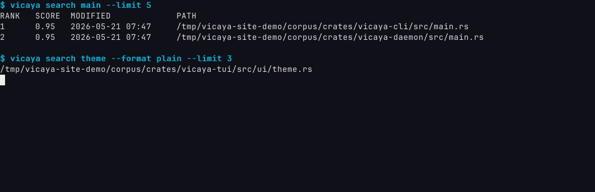
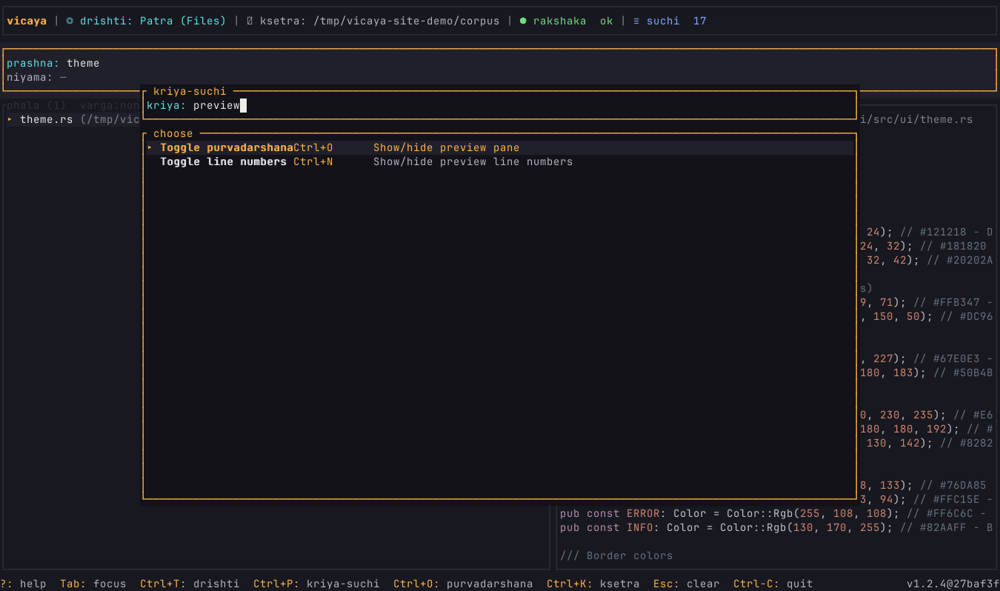
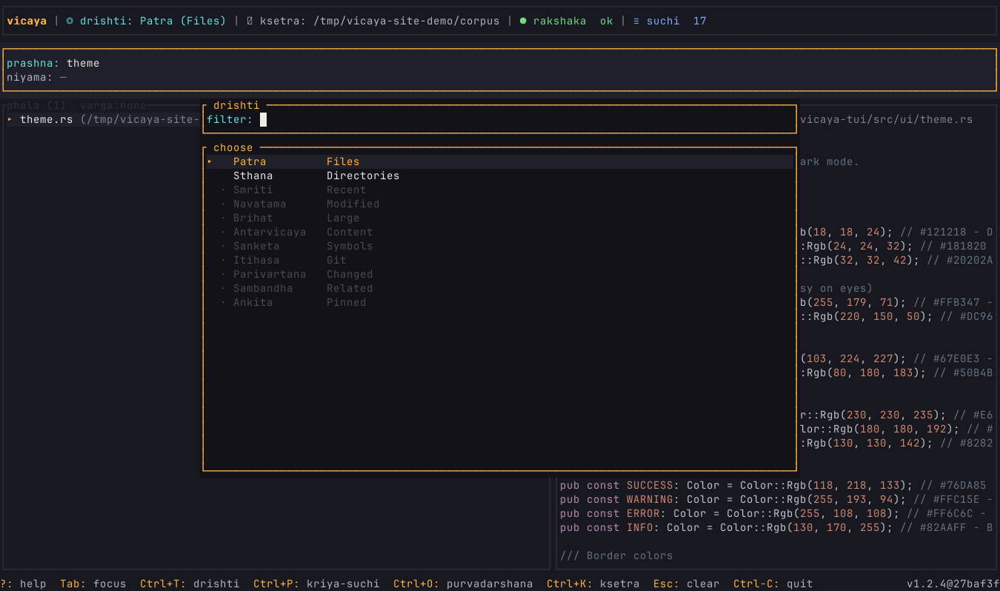

Composable paths
Plain, table, and JSON output for shells, fzf, jq, and agents.
Rust · terminal-native · macOS
Vicaya is a lightweight developer file finder for filenames, paths, and metadata. Query it from the CLI, move through results in the TUI, and compose exact paths with the tools you already use.
What it is
Plain, table, and JSON output for shells, fzf, jq, and agents.
Ranked results, preview, scoped navigation, and an action palette.
Tracks filenames, paths, size, and modification time on your machine.
Simple mental model
Developer workflow
It is built for finding project files quickly, not for searching inside file contents.
type:, ext:, path:, mtime:, and size:.
.gitignore, .ignore, and .git/info/exclude.
Why Vicaya
Built for code paths, shell workflows, scripts, and automation.
Find the file with Vicaya; search inside it with rg.
Use it as the ranked source for fzf, shells, and custom scripts.
Daemon, index, preview, and results stay on your machine.
Real screenshots

prashna, phala, purvadarshana.


Stay current:
vicaya upgrade updates to the latest release.
vicaya --version
vicaya upgrade --check
vicaya upgrade